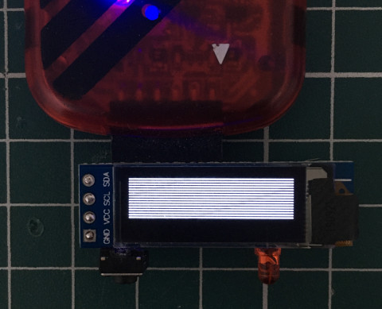

Steward
分享是一種喜悅、更是一種幸福
微處理器 - Microchip PIC12F1822 - Assembly - 0.91" OLED 128x32 SSD1306
參考資訊：
https://github.com/adafruit/Adafruit_SSD1306
https://cdn-shop.adafruit.com/datasheets/SSD1306.pdf
main.s
list p=12f1822, r=hex
#include <p12f1822.inc>
__config _CONFIG1, _FOSC_INTOSC & _WDTE_OFF & _MCLRE_OFF
__config _CONFIG2, _LVP_OFF
#define i2c_cnt 0x70
#define i2c_dat 0x71
#define i2c_var 0x72
#define lcd_var1 0x73
#define lcd_var2 0x74
#define delay_var1 0x75
#define delay_var2 0x76
#define led 0x00
#define i2c_scl 0x01
#define i2c_sda 0x02
#define i2c_addr 0x78
#define lcd_width 0x80
#define lcd_height 0x20
#define cmd_contrast 0x81
#define cmd_disp_resume 0xa4
#define cmd_normal_disp 0xa6
#define cmd_invert_disp 0xa7
#define cmd_disp_off 0xae
#define cmd_disp_on 0xaf
#define cmd_disp_offset 0xd3
#define cmd_com_pins 0xda
#define cmd_vcom_detect 0xdb
#define cmd_clock_div 0xd5
#define cmd_pre_charge 0xd9
#define cmd_multiplex 0xa8
#define cmd_start_line 0x40
#define cmd_memory_mode 0x20
#define cmd_column_addr 0x21
#define cmd_page_addr 0x22
#define cmd_scan_dec 0xc8
#define cmd_seg_remap 0xa1
#define cmd_charge_pump 0x8d
org 0x0000
goto start
org 0x0100
start:
banksel OSCCON
movlw b'11110010'
movwf OSCCON
banksel ANSELA
clrf ANSELA
banksel LATA
movlw 0xff
movwf LATA
banksel TRISA
bcf TRISA, led
bcf TRISA, i2c_scl
bcf TRISA, i2c_sda
banksel LATA
movlw 0xff
movwf LATA
loop:
call ssd1306_init
call ssd1306_set_col_addr
call ssd1306_set_page_addr
lcd:
call i2c_start
movlw i2c_addr
call i2c_write
movlw 0x40
call i2c_write
banksel lcd_var1
movlw 0x08
movwf lcd_var1
m0:
movlw 0x40
movwf lcd_var2
m1:
movlw 0x55
call i2c_write
banksel lcd_var2
decfsz lcd_var2, f
goto m1
decfsz lcd_var1, f
goto m0
call i2c_stop
idle:
banksel LATA
bcf LATA, led
call delay1s
banksel LATA
bsf LATA, led
call delay1s
goto idle
delay1s:
banksel delay_var1
movlw 0xff
movwf delay_var2
movwf delay_var1
decfsz delay_var1, f
goto $-1
decfsz delay_var2, f
goto $-3
return
delay:
banksel delay_var1
movlw 0x40
movwf delay_var1
decfsz delay_var1, f
goto $-1
return
i2c_start:
banksel LATA
bsf LATA, i2c_sda
bsf LATA, i2c_scl
call delay
banksel LATA
bcf LATA, i2c_sda
call delay
banksel LATA
bcf LATA, i2c_scl
return
i2c_stop:
call delay
banksel LATA
bcf LATA, i2c_sda
call delay
banksel LATA
bsf LATA, i2c_scl
call delay
banksel LATA
bsf LATA, i2c_sda
return
i2c_write:
banksel i2c_dat
movwf i2c_dat
movlw 0x08
movwf i2c_cnt
i0:
banksel i2c_dat
rlf i2c_dat, f
banksel LATA
btfss STATUS, C
bcf LATA, i2c_sda
btfsc STATUS, C
bsf LATA, i2c_sda
call delay
banksel LATA
bsf LATA, i2c_scl
call delay
banksel LATA
bcf LATA, i2c_scl
decfsz i2c_cnt, f
goto i0
call delay
banksel LATA
bsf LATA, i2c_sda
call delay
banksel LATA
bsf LATA, i2c_scl
call delay
banksel LATA
bcf LATA, i2c_scl
return
send_cmd:
banksel i2c_var
movwf i2c_var
call i2c_start
movlw i2c_addr
call i2c_write
movlw 0x00
call i2c_write
banksel i2c_var
movf i2c_var, w
call i2c_write
call i2c_stop
return
send_dat:
banksel i2c_var
movwf i2c_var
call i2c_start
movlw i2c_addr
call i2c_write
movlw 0x40
call i2c_write
banksel i2c_var
movf i2c_var, w
call i2c_write
call i2c_stop
return
ssd1306_init:
movlw cmd_disp_off
call send_cmd
movlw cmd_clock_div
call send_cmd
movlw 0x80
call send_cmd
movlw cmd_multiplex
call send_cmd
movlw 0x1f
call send_cmd
movlw cmd_disp_offset
call send_cmd
movlw 0x00
call send_cmd
movlw cmd_start_line
call send_cmd
movlw cmd_charge_pump
call send_cmd
movlw 0x14
call send_cmd
movlw cmd_memory_mode
call send_cmd
movlw 0x00
call send_cmd
movlw cmd_seg_remap
call send_cmd
movlw cmd_scan_dec
call send_cmd
movlw cmd_com_pins
call send_cmd
movlw 0x02
call send_cmd
movlw cmd_contrast
call send_cmd
movlw 0x8f
call send_cmd
movlw cmd_pre_charge
call send_cmd
movlw 0xf1
call send_cmd
movlw cmd_vcom_detect
call send_cmd
movlw 0x40
call send_cmd
movlw cmd_disp_resume
call send_cmd
movlw cmd_normal_disp
call send_cmd
movlw cmd_disp_on
call send_cmd
return
ssd1306_set_col_addr:
movlw cmd_column_addr
call send_cmd
movlw 0x00
call send_cmd
movlw (lcd_width-1)
call send_cmd
return
ssd1306_set_page_addr:
movlw cmd_page_addr
call send_cmd
movlw 0x00
call send_cmd
movlw ((lcd_height/8)-1)
call send_cmd
return
end
編譯
$ gpasm main.s
完成
